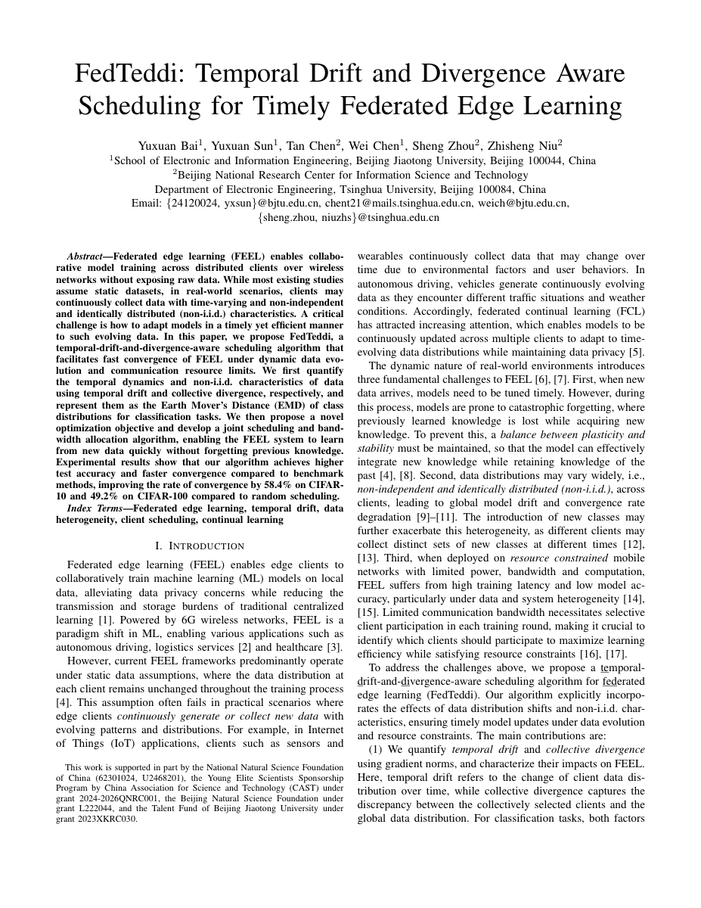
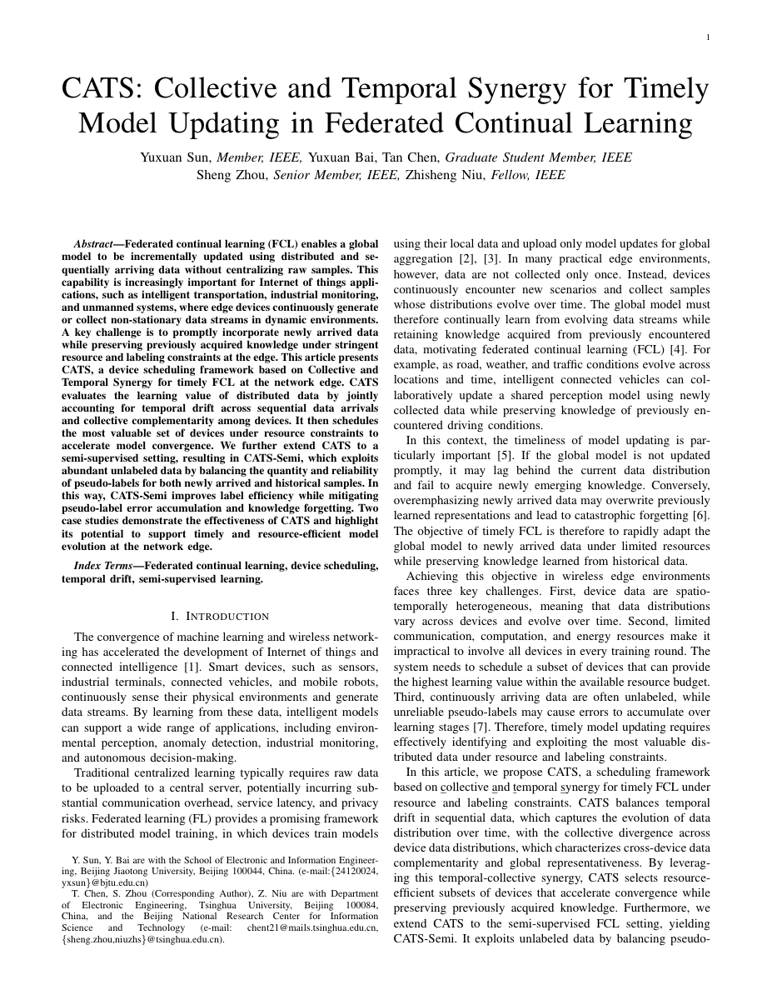
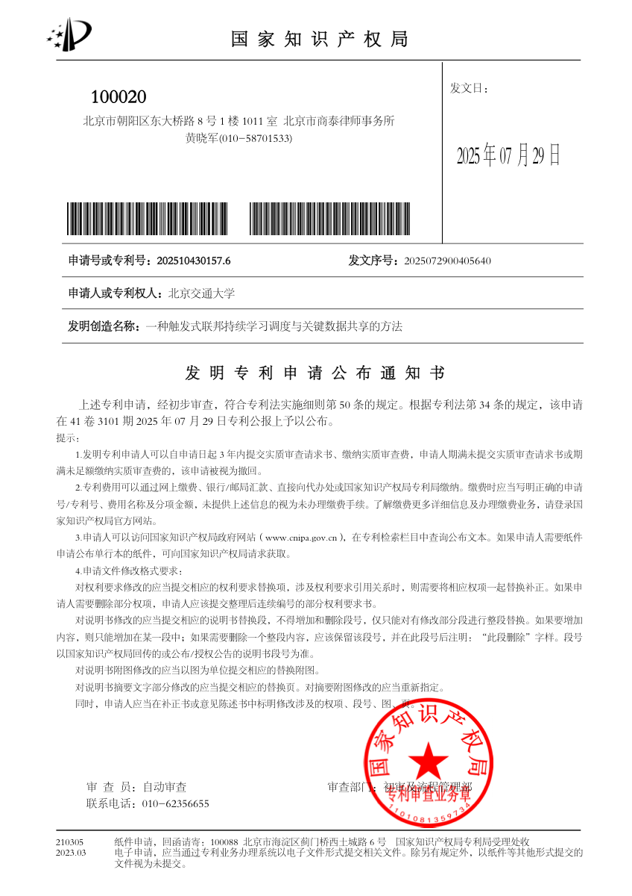

 ICPADS 2025 · 第一作者 FedTeddi: Temporal Drift and Divergence Aware Scheduling for Timely Federated Edge Learning 针对边缘设备持续产生动态非独立同分布数据、通信资源受限、模型难以及时适应新数据和历史知识容易遗忘的问题，提出基于时间漂移与集体散度的数据感知调度机制。 联合优化设备选择与无线带宽分配。 在 CIFAR-10 和 CIFAR-100 上，相比 Random 达到目标精度所需时间分别降低 58.4% 和 49.2%。 论文 PDF DOI 代码仓库
 IEEE Communications Magazine · 在投 CATS: Collective and Temporal Synergy for Timely Model Updating in Federated Continual Learning 面向物联网边缘环境中的数据持续演化、设备间数据异构和资源约束问题，提出群体与时间协同框架，联合刻画数据时效性与多设备数据互补关系。 评估分布式数据价值，提升高价值设备选择质量。 扩展到半监督学习场景，平衡新旧样本伪标签数量与质量，持续学习任务中收敛速度提升 44%。 论文 PDF 代码仓库
 发明专利 · CN120387526A 一种触发式联邦持续学习调度与关键数据共享的方法 通过边缘设备持续监测、服务器触发判断、关键数据样本筛选和联邦聚合机制，减少不必要的通信与计算资源消耗，提高动态环境下系统整体效率。 公布通知书 专利交底书